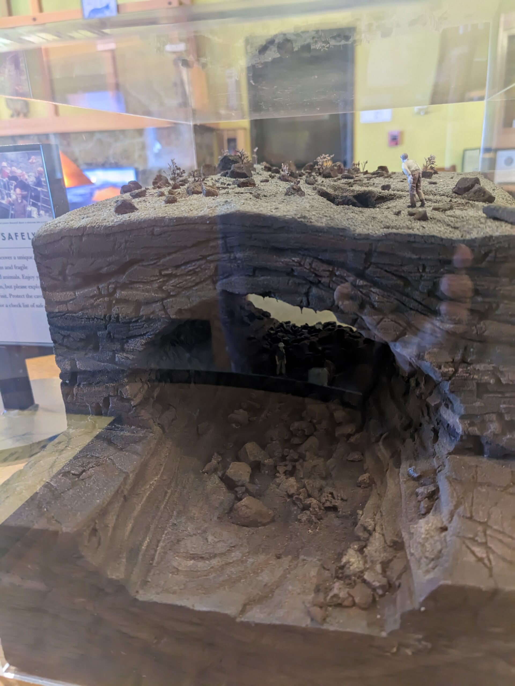
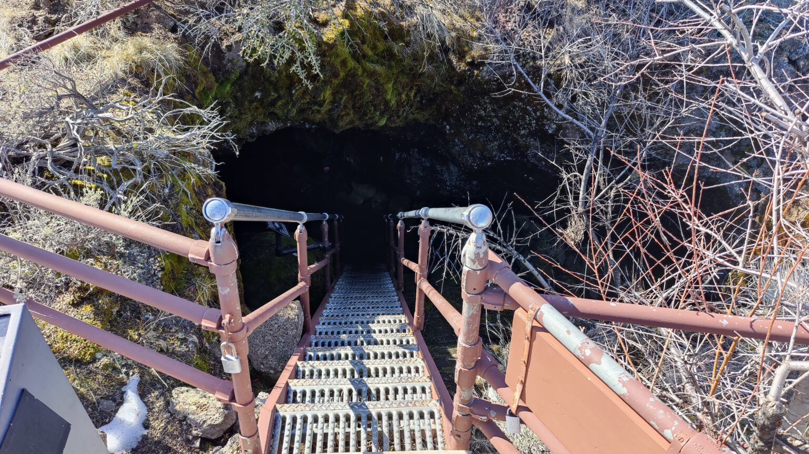

Background
Lava Beds National Monument is the kind of place that makes you feel the past under your feet. In northeastern California, the land is all sharp lava, hidden caves, and wide-open high desert, shaped long ago by eruptions from the Medicine Lake volcano.
What makes it truly unforgettable is how much human history is layered into the landscape. From ancient Native rock art and old campsites to the Modoc War and the living traditions of the Modoc and Klamath peoples, Lava Beds presents a diverse cross-section of human and geological history.
Our Experience
Exploring lava tubes
The beginning of a very long day at Lava Beds began with a much needed stop at the Visitor's Center (VC). Upon our arrival, we added a layer of insulation — it was chilly in February. The VC was not busy in the winter which gave us the feeling that the entire park was all ours.
After a quick check-in with the Park Rangers and purchasing an annual interagency pass, we browsed the exhibits and bookstore. While discussing what our plan would be for the day, we consulted the rangers — one of the best resources we have in the National Parks. We were advised on best practices for caving, obtaining permits, and which resources are most practical.

Before we departed the VC for our first lava tube excursion, we picked up the standardized park brochure — a map of the entire park and specific information such as human and geological history. The NPS also provided a caving safety pamphlet, and we filed for a cave permit and received a White Nose Syndrome information card. The info card helps visitors with caring for their gear and raises awareness of the disease that affects bat populations in North America and globally.
The best resource on exploring lava tubes was by far the Lava Beds Caves guide published by ABC Publishing and available from the Oregon Grotto in Fairview, Oregon. This publication includes an in-depth overview of each cave system on the property, photos, historical events, statistics, and cave maps. We highly encourage all visitors to Lava Beds NM to pick up this resource.
Mushpot Cave
The mandatory first stop, after the decontamination station at the VC, is Mushpot Cave. This lava tube is the recommended first experience for anyone new to exploring lava tubes or other caves. A short walk from the VC brings you to the entrance. There is a steep staircase with handrails to assist in the initial descent. While you do not have to have your own caving equipment, the VC has impact helmets and flashlights for rent on a daily basis.

Valentine Cave
Valentine Cave has been on researchers' radar since the 1930s. It features one of the most preserved lava-flow features in the area. The entrance from ground level doesn't look like much to the untrained eye, but from just inside the entrance a spectacular view of the above-ground world puts the true perspective of the subterranean world you've entered.
The cave gets its name from the accounts of Ross R. Musselman, who discovered the cave on February 14, 1933 — Valentine's Day. Valentine Cave is about 11,000 years old, somewhat younger than the other lava tube caves found on the property.

Some notable features of Valentine Cave include its relatively thin ceiling where tree roots can be observed penetrating the cave in a few places. The roots of trees can provide nutrients for small cave-dwelling life and are an important feature of the cave. Conservation and light caving practices allow cave life to thrive for many years to come.

Conditions inside the cave vary depending on elevation and distance traveled. Typically, internal temperatures average 50°F throughout the year, though humidity fluctuates depending on depth and distance from the entrance.